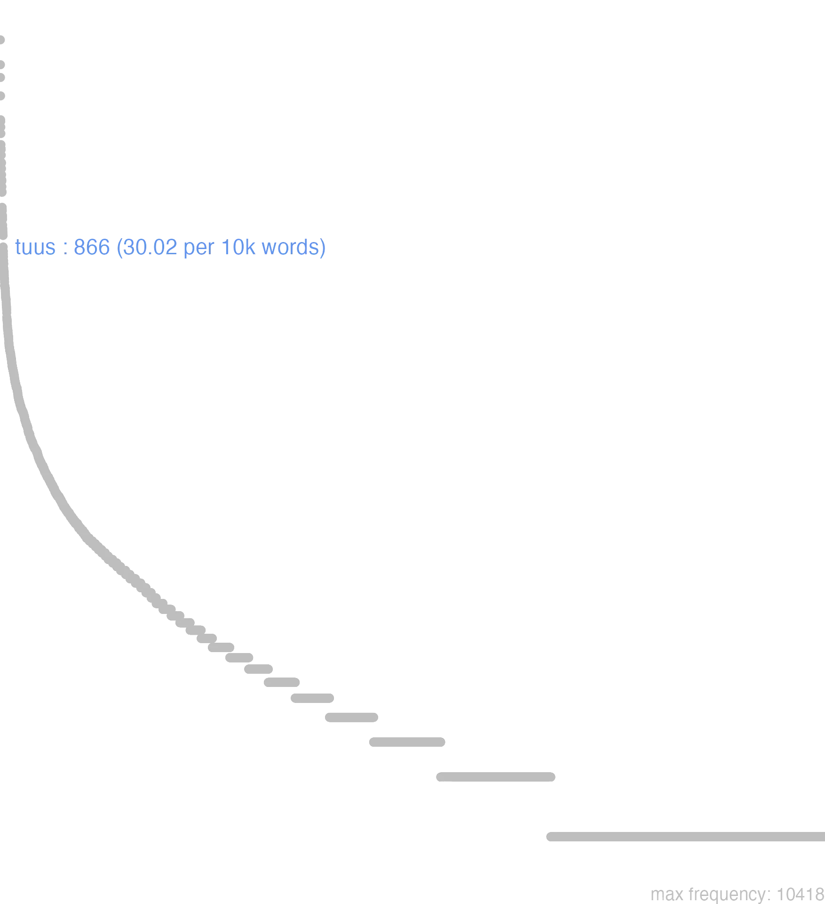

178 tuus
178.0.0.1 bases lexicais
id: http://lila-erc.eu/data/id/lemma/129328
classe: determinante
paradigma: 1ª classe (tema em -a/o-)
outras grafias: tuos, tuusmet, tuuspte
variantes do lema:
no data
tŭus
no data
178.0.0.2 dicionários tradicionais
tuus -a -um
pron. possessivo
pron. possessivo
1 I-Sent. próprio Teu, tua Plaut. Amph. 375.
2 II-Sent. particular Teu querido Cic. De Or. 1, 45.
3 III-Sents. diversos:-Tuī, -ōrum, m. pl. Os teus parentes, amigos, partidários Cíc. Fam. 13, 16, 3.
4 III-Sents. diversos:-Tuum, -ī e tua, -ōrum, n. sing. e pl.: os teus bens, a tua fortuna Cíc. Tull. 53.
5 III-Sents. diversos:
6 III-Loc.
[EXEMPLOS]
5
Tuum est mais inf.: cabe a ti … Plaut. St. 718.
6
tempore tuo, occasio tua, ‘ocasião oportuna para ti’ T. Lív. 22, 39, 21.
no data
Tuus -a -um
1 Cic. teu.
[EXEMPLOS]
X
tuum est Ter Pertence-te, he tua obrigaçaõ
tuum est Plaut He teu costume
no data
no data
178.0.0.3 dados de corpus
![This chart plots collocate by scoreSUBST, for the headword tuus here are all the values plotted: collocate: littera; scoreSUBST: 4. collocate: epistula; scoreSUBST: 4. collocate: clementia; scoreSUBST: 3. collocate: animus; scoreSUBST: 2. collocate: fortuna; scoreSUBST: 2. collocate: iste; scoreSUBST: 0. collocate: amicus; scoreSUBST: 2. collocate: ego; scoreSUBST: 0. collocate: soror; scoreSUBST: 2. collocate: familiaris; scoreSUBST: 0. collocate: consilium; scoreSUBST: 2. collocate: pater; scoreSUBST: 2. collocate: patruus; scoreSUBST: 2. collocate: scelus; scoreSUBST: 2. collocate: auus; scoreSUBST: 2. collocate: uita; scoreSUBST: 2. collocate: pro; scoreSUBST: 0. collocate: uirtus; scoreSUBST: 1. collocate: corpus; scoreSUBST: 2. collocate: misericordia; scoreSUBST: 2. collocate: reditus; scoreSUBST: 2. collocate: hospes; scoreSUBST: 2. collocate: humanitas; scoreSUBST: 2. collocate: cogitatio; scoreSUBST: 2. collocate: aduentus; scoreSUBST: 2. collocate: mater; scoreSUBST: 2. collocate: dignus; scoreSUBST: 0. collocate: puer; scoreSUBST: 2. collocate: amor; scoreSUBST: 2. collocate: filius; scoreSUBST: 2. collocate: commendatio; scoreSUBST: 2. collocate: necessarius2; scoreSUBST: 2. collocate: liberalitas; scoreSUBST: 2. collocate: numen; scoreSUBST: 2. collocate: pudor; scoreSUBST: 2. collocate: gaudeo; scoreSUBST: 0. collocate: commoueo; scoreSUBST: 0. collocate: parens; scoreSUBST: 2. collocate: liberi; scoreSUBST: 2. collocate: negotium; scoreSUBST: 2](./Media/wordcloud__xx116-117-117-115xx__BY_collocate_scoreSUBST.webp)
![This chart plots collocate by scoreADJ, for the headword tuus here are all the values plotted: collocate: littera; scoreADJ: 0. collocate: epistula; scoreADJ: 0. collocate: clementia; scoreADJ: 0. collocate: animus; scoreADJ: 0. collocate: fortuna; scoreADJ: 0. collocate: iste; scoreADJ: 0. collocate: amicus; scoreADJ: 0. collocate: ego; scoreADJ: 0. collocate: soror; scoreADJ: 0. collocate: familiaris; scoreADJ: 2. collocate: consilium; scoreADJ: 0. collocate: pater; scoreADJ: 0. collocate: patruus; scoreADJ: 0. collocate: scelus; scoreADJ: 0. collocate: auus; scoreADJ: 0. collocate: uita; scoreADJ: 0. collocate: pro; scoreADJ: 0. collocate: uirtus; scoreADJ: 0. collocate: corpus; scoreADJ: 0. collocate: misericordia; scoreADJ: 0. collocate: reditus; scoreADJ: 0. collocate: hospes; scoreADJ: 0. collocate: humanitas; scoreADJ: 0. collocate: cogitatio; scoreADJ: 0. collocate: aduentus; scoreADJ: 0. collocate: mater; scoreADJ: 0. collocate: dignus; scoreADJ: 2. collocate: puer; scoreADJ: 0. collocate: amor; scoreADJ: 0. collocate: filius; scoreADJ: 0. collocate: commendatio; scoreADJ: 0. collocate: necessarius2; scoreADJ: 0. collocate: liberalitas; scoreADJ: 0. collocate: numen; scoreADJ: 0. collocate: pudor; scoreADJ: 0. collocate: gaudeo; scoreADJ: 0. collocate: commoueo; scoreADJ: 0. collocate: parens; scoreADJ: 0. collocate: liberi; scoreADJ: 0. collocate: negotium; scoreADJ: 0](./Media/wordcloud__xx116-117-117-115xx__BY_collocate_scoreADJ.webp)
![This chart plots collocate by scoreVERBO, for the headword tuus here are all the values plotted: collocate: littera; scoreVERBO: 0. collocate: epistula; scoreVERBO: 0. collocate: clementia; scoreVERBO: 0. collocate: animus; scoreVERBO: 0. collocate: fortuna; scoreVERBO: 0. collocate: iste; scoreVERBO: 0. collocate: amicus; scoreVERBO: 0. collocate: ego; scoreVERBO: 0. collocate: soror; scoreVERBO: 0. collocate: familiaris; scoreVERBO: 0. collocate: consilium; scoreVERBO: 0. collocate: pater; scoreVERBO: 0. collocate: patruus; scoreVERBO: 0. collocate: scelus; scoreVERBO: 0. collocate: auus; scoreVERBO: 0. collocate: uita; scoreVERBO: 0. collocate: pro; scoreVERBO: 0. collocate: uirtus; scoreVERBO: 0. collocate: corpus; scoreVERBO: 0. collocate: misericordia; scoreVERBO: 0. collocate: reditus; scoreVERBO: 0. collocate: hospes; scoreVERBO: 0. collocate: humanitas; scoreVERBO: 0. collocate: cogitatio; scoreVERBO: 0. collocate: aduentus; scoreVERBO: 0. collocate: mater; scoreVERBO: 0. collocate: dignus; scoreVERBO: 0. collocate: puer; scoreVERBO: 0. collocate: amor; scoreVERBO: 0. collocate: filius; scoreVERBO: 0. collocate: commendatio; scoreVERBO: 0. collocate: necessarius2; scoreVERBO: 0. collocate: liberalitas; scoreVERBO: 0. collocate: numen; scoreVERBO: 0. collocate: pudor; scoreVERBO: 0. collocate: gaudeo; scoreVERBO: 2. collocate: commoueo; scoreVERBO: 2. collocate: parens; scoreVERBO: 0. collocate: liberi; scoreVERBO: 0. collocate: negotium; scoreVERBO: 0](./Media/wordcloud__xx116-117-117-115xx__BY_collocate_scoreVERBO.webp)
![This chart plots collocate by scoreADV, for the headword tuus here are all the values plotted: collocate: littera; scoreADV: 0. collocate: epistula; scoreADV: 0. collocate: clementia; scoreADV: 0. collocate: animus; scoreADV: 0. collocate: fortuna; scoreADV: 0. collocate: iste; scoreADV: 0. collocate: amicus; scoreADV: 0. collocate: ego; scoreADV: 0. collocate: soror; scoreADV: 0. collocate: familiaris; scoreADV: 0. collocate: consilium; scoreADV: 0. collocate: pater; scoreADV: 0. collocate: patruus; scoreADV: 0. collocate: scelus; scoreADV: 0. collocate: auus; scoreADV: 0. collocate: uita; scoreADV: 0. collocate: pro; scoreADV: 0. collocate: uirtus; scoreADV: 0. collocate: corpus; scoreADV: 0. collocate: misericordia; scoreADV: 0. collocate: reditus; scoreADV: 0. collocate: hospes; scoreADV: 0. collocate: humanitas; scoreADV: 0. collocate: cogitatio; scoreADV: 0. collocate: aduentus; scoreADV: 0. collocate: mater; scoreADV: 0. collocate: dignus; scoreADV: 0. collocate: puer; scoreADV: 0. collocate: amor; scoreADV: 0. collocate: filius; scoreADV: 0. collocate: commendatio; scoreADV: 0. collocate: necessarius2; scoreADV: 0. collocate: liberalitas; scoreADV: 0. collocate: numen; scoreADV: 0. collocate: pudor; scoreADV: 0. collocate: gaudeo; scoreADV: 0. collocate: commoueo; scoreADV: 0. collocate: parens; scoreADV: 0. collocate: liberi; scoreADV: 0. collocate: negotium; scoreADV: 0](./Media/wordcloud__xx116-117-117-115xx__BY_collocate_scoreADV.webp)
![This chart plots collocate by scoreFUNC, for the headword tuus here are all the values plotted: collocate: littera; scoreFUNC: 0. collocate: epistula; scoreFUNC: 0. collocate: clementia; scoreFUNC: 0. collocate: animus; scoreFUNC: 0. collocate: fortuna; scoreFUNC: 0. collocate: iste; scoreFUNC: 0. collocate: amicus; scoreFUNC: 0. collocate: ego; scoreFUNC: 0. collocate: soror; scoreFUNC: 0. collocate: familiaris; scoreFUNC: 0. collocate: consilium; scoreFUNC: 0. collocate: pater; scoreFUNC: 0. collocate: patruus; scoreFUNC: 0. collocate: scelus; scoreFUNC: 0. collocate: auus; scoreFUNC: 0. collocate: uita; scoreFUNC: 0. collocate: pro; scoreFUNC: 20. collocate: uirtus; scoreFUNC: 0. collocate: corpus; scoreFUNC: 0. collocate: misericordia; scoreFUNC: 0. collocate: reditus; scoreFUNC: 0. collocate: hospes; scoreFUNC: 0. collocate: humanitas; scoreFUNC: 0. collocate: cogitatio; scoreFUNC: 0. collocate: aduentus; scoreFUNC: 0. collocate: mater; scoreFUNC: 0. collocate: dignus; scoreFUNC: 0. collocate: puer; scoreFUNC: 0. collocate: amor; scoreFUNC: 0. collocate: filius; scoreFUNC: 0. collocate: commendatio; scoreFUNC: 0. collocate: necessarius2; scoreFUNC: 0. collocate: liberalitas; scoreFUNC: 0. collocate: numen; scoreFUNC: 0. collocate: pudor; scoreFUNC: 0. collocate: gaudeo; scoreFUNC: 0. collocate: commoueo; scoreFUNC: 0. collocate: parens; scoreFUNC: 0. collocate: liberi; scoreFUNC: 0. collocate: negotium; scoreFUNC: 0](./Media/wordcloud__xx116-117-117-115xx__BY_collocate_scoreFUNC.webp)
![This charts plots the frequency of lemma by author_Frequencies. The Hieronymus subcorpus registers the highest normalized frequency, with the value of 44.93 and an absolute frequency of 20. The Cicero subcorpus follows, with a normalized frequency of 37.81 and an absolute frequency of 607. the subcorpus with the least normalized frequency is Caesar with the normalized value of 0 and an absolute freqeuncy of 0. here are all the values: subcorpus: Caesar ; normalized frequency: 0 ; absolute frequency: 0. subcorpus: Cicero ; normalized frequency: 607 ; absolute frequency: 37.8136602626399. subcorpus: Horatius ; normalized frequency: 26 ; absolute frequency: 23.0885356540272. subcorpus: Ovidius ; normalized frequency: 6 ; absolute frequency: 10.2951269732327. subcorpus: Phaedrus ; normalized frequency: 22 ; absolute frequency: 33.3991194777592. subcorpus: Sallustius ; normalized frequency: 4 ; absolute frequency: 3.71023096187738. subcorpus: Seneca ; normalized frequency: 166 ; absolute frequency: 30.981131371195. subcorpus: Suetonius ; normalized frequency: 0 ; absolute frequency: 0. subcorpus: Tacitus ; normalized frequency: 5 ; absolute frequency: 17.164435290079. subcorpus: Vergilius ; normalized frequency: 10 ; absolute frequency: 19.3050193050193. subcorpus: Hieronymus ; normalized frequency: 20 ; absolute frequency: 44.9337227589306](./Media/barchart__xx116-117-117-115xx__lemma_BY_author_Frequencies.webp)
![This charts plots the frequency of lemma by genre_Frequencies. The Prosa.epistolográfica subcorpus registers the highest normalized frequency, with the value of 71.01 and an absolute frequency of 268. The Poesia.épica subcorpus follows, with a normalized frequency of 19.31 and an absolute frequency of 10. the subcorpus with the least normalized frequency is Prosa.histórica with the normalized value of 2.19 and an absolute freqeuncy of 9. here are all the values: subcorpus: Prosa.histórica ; normalized frequency: 9 ; absolute frequency: 2.1909004600891. subcorpus: Prosa.filosófica ; normalized frequency: 140 ; absolute frequency: 23.0638704469449. subcorpus: Prosa.oratória ; normalized frequency: 322 ; absolute frequency: 30.9160561865717. subcorpus: Prosa.epistolográfica ; normalized frequency: 268 ; absolute frequency: 71.0140703251278. subcorpus: Poesia.lírica ; normalized frequency: 26 ; absolute frequency: 21.8726339698831. subcorpus: Poesia.didática ; normalized frequency: 28 ; absolute frequency: 23.750954279413. subcorpus: Poesia.trágica ; normalized frequency: 43 ; absolute frequency: 37.3523280055594. subcorpus: Poesia.épica ; normalized frequency: 10 ; absolute frequency: 19.3050193050193. subcorpus: Prosa.ficcional ; normalized frequency: 20 ; absolute frequency: 44.9337227589306](./Media/barchart__xx116-117-117-115xx__lemma_BY_genre_Frequencies.webp)
![This charts plots the frequency of lemma by period_Frequencies. The IV.d.C. subcorpus registers the highest normalized frequency, with the value of 44.93 and an absolute frequency of 20. The I.a.C. subcorpus follows, with a normalized frequency of 30.11 and an absolute frequency of 647. the subcorpus with the least normalized frequency is II.d.C. with the normalized value of 13.09 and an absolute freqeuncy of 5. here are all the values: subcorpus: I.a.C. ; normalized frequency: 647 ; absolute frequency: 30.1140330463114. subcorpus: I.d.C. ; normalized frequency: 194 ; absolute frequency: 29.6772219672633. subcorpus: II.d.C. ; normalized frequency: 5 ; absolute frequency: 13.0890052356021. subcorpus: IV.d.C. ; normalized frequency: 20 ; absolute frequency: 44.9337227589306](./Media/barchart__xx116-117-117-115xx__lemma_BY_period_Frequencies.webp)
fortuna tua non uult
Sen.Ep.19.8
A tua fortuna não quer. [JDD]
cognatus adfinis uiri tui familiaris
Cic.Cael.34
Era parente de sangue, por afinidade, amigo de teu marido? [JDD]
accepi tuas tris iam epistulas
Cic.Att.1.13.1
Já recebi as três cartas tuas. [JDD]
exulto quotiens epistulas tuas accipio
Sen.Ep.19.1
Dou pulos de alegria todas as vezes que recebo tuas cartas. [JDD]
valde enim exspecto tuas litteras
Cic.Att.2.5.3
Pois espero muito as tuas cartas. [JDD]
crebras exspectationes nobis tui commoves
Cic.Att.1.4.1
Me deixas abalado com as intermináveis esperas de ti. [JDD]
utinam M. Antoni auum tuum meminisses
Cic.Phil.1.34.2
Quem dera, Marco Antônio, tivesses te lembrado de teu avô! [JDD]
utinam valeat ad celeritatem reditus tui
Cic.Att.4.16.7
Oxalá isto que eu disse sirva somente para a rapidez de tua volta! [JDD, de outra edição]
honora patrem tuum et matrem tuam
Vulg.Marc.7.10
Honra teu pai e tua mãe. [JDD]
non est hic mater tua ;
Phaed.3.15
tua mãe não está aqui”. [JDD]
quis iste est alter Agamemnon tuus
Sen.Ag.962
Quem é esse teu outro Agamenão? [JDD]
tuo adventu nobis opus est maturo
Cic.Att.1.2.2
Faz-se necessária tua pronta chegada para mim.. [JDD]
quam minimum sit in corpore tuo spoliorum
Sen.Ep.14.9
que haja em teu corpo o mínimo de despojos possível. [JDD]
ut uidua loquere uir caret uita tuus
Sen.Ag.963
Fala como uma viúva: teu marido está sem vida. [JDD]
quae tua mens oculi manus ardor animi
Cic.Lig.9
Qual tua mente, teus olhos, tuas mãos,o ardor de teu espírito? [JDD]
nunc uero quae tua est ista uita
Cic.Catil.1.16.4
Mas agora, que vida é essa tua? [JDD]
alteram quam mihi Canusinus tuus hospes reddidit
Cic.Att.1.13.1
a outra, que o teu hóspede de Canúsio me entregou. [JDD]
ego sum Philositi uilici filius deliciolum tuum
Sen.Ep.12.3
eu sou filho do caseiro Filósito, sou o teu favorito”. [JDD]
plus enim gaudebit tua morte quo plus acceperit
Sen.Ep.123.11
pois mais se alegrará com tua morte quanto mais receber. [JDD]
isti laudatores tui ne ne testes mei sunt
Cic.Ver.2.4.19.8
Por acaso esses teus elogiadores não são minhas testemunhas? [JDD]
metuis parentem quae tuum reditum expetens sollicita pendet
Sen.Oed.795
Temes tua mãe, que está ansiosa, esperando preocupada o teu retorno? [JDD]
de tuo autem negotio saepe ad me scribis
Cic.Att.1.19.9
Me escreves com frequência sobre o teu assunto. [JDD]
sed humanitatem tuam amoremque in tuos reditus celeritas declarabit
Cic.Att.4.15.2
Mas a rapidez de tua volta vai expressar tua humanidade e amor para com os teus. [JDD, de outra edição]
iustitia abstinentia clementia tui Ciceronis itaque opiniones omnium superavit
Cic.Att.5.16.3
graças à justiça, à moderação, à clemência de teu Cícero e assim ele superou as opiniões de todos. [JDD]
valde eius sermo de Publio cum tuis litteris congruebat
Cic.Att.2.8.1
A conversa dele a respeito de Públio está perfeitamente de acordo com tuas cartas. [JDD]
o suavis epistulas tuas uno tempore mihi datas duas
Cic.Att.2.12.1
Ó que agradáveis as duas cartas tuas entregues a mim ao mesmo tempo! [JDD]
mater tua et soror a me Quintoque fratre diligitur
Cic.Att.1.8.1
Tua mãe e tua irmã têm a minha estima e a do meu irmão Quinto. [JDD, de outra edição]
ita dico quisquis uitam suam contempsit tuae dominus est
Sen.Ep.4.8
É o que digo: qualquer um que desprezou a própria vida é dono da tua. [JDD]
non minus incerta in re publica quam in epistula tua
Cic.Att.2.15.1
que a situação não é menos incerta na república do em tua carta. [JDD]
Numestium ex litteris tuis studiose scriptis libenter in amicitiam recepi
Cic.Att.2.20.1
A Numéstio, de acordo com tua carta zelosamente escrita, eu, com prazer, o recebi em amizade. [JDD]
redde nunc animos acres nunc aliquid aude sceleribus dignum tuis
Sen.Oed.878
Mostra agora os teus ânimos vigorosos; ousa agora algo digno de teus crimes. [JDD]
itaque quantum potes circumscribe corpus tuum et animo locum laxa
Sen.Ep.15.2
Por isso limita o quanto podes o teu corpo e amplia o espaço de teu espírito. [JDD]
desiderio tuo satis faciam et uirtutes exhortabor et uitia conuerberabo
Sen.Ep.121.4
Satisfarei o teu desejo: não só exortarei as virtudes, como também fustigarei os vícios. [JDD]
nunc de Saturnini crimine ac de clarissimi patrui tui morte dicemus
Cic.Rab.Perd.18
Agora falaremos da acusação concernente a Saturnino e da morte de teu ilustríssimo tio. [JDD]
nunc mihi et consiliis opus est tuis et amore et fide
Cic.Att.2.22.4
Agora necessito de teus conselhos, de tua afeição e lealdade. [JDD]
Laenio tuas commendationes et statim verbis et reliquo tempore re probabo
Cic.Att.5.21.4
Tanto imediatamente com palavras e no tempo restante com obra, demonstrarei a Lênio o valor de tuas recomendações. [JDD]
uide quid licentiae Caesar nobis tua liberalitas det uel potius audaciae
Cic.Lig.23
Vê, César, que liberdade tua generosidade nos dá, ou melhor, que ousadia. [JDD, de outra edição]
ego cum Laodiceam venero Quinto sororis tuae filio togam puram iubeor dare
Cic.Att.5.20.9
Eu, quando eu chegar a Laodiceia, sou encarregado de entregar a toga branca [viril] a Quinto, o filho de tua irmã. [JDD]
mitteris Erebo uile pro cunctis caput arcana sacri uoce ni retegis tua
Sen.Oed.521
Serás enviado ao Érebo, vítima de pouco valor para pagar por todos, se não desvendas, com tua própria voz, os mistérios da cerimônia. [JDD]
cur igitur non eis faues eos laudas quorum similem tuum filium esse uis
Cic.Phil.10.5.3
Por que então não apoias, elogias aqueles com os quais queres que teu filho seja parecido? [JDD, de outra edição]
id te scire volui si quid forte ea res ad cogitationes tuas pertineret
Cic.Att.1.6.1
Quis que soubesse isso, se é que esse assunto tem a ver com tuas reflexões. [JDD]
quis te ex hac tanta frequentia tot ex tuis amicis ac necessariis salutauit
Cic.Catil.1.16.7
Quem desta tão grande freqüência, de tantos amigos e íntimos teus te cumprimentou? [JDD, de outra edição]
sed intellegis pro tua praestanti prudentia Cn. Domiti cum hac sola rem esse nobis
Cic.Cael.32
Mas tu, Cneu Domício, entendes, em tua eminente prudência, que para nós o interesse está somente nela. [JDD]
cupio ut ait tuus amicus Sophocles κἂν ὑπὸ στέγῃ πυκνῆς ἀκούειν ψακάδος εὑδούσῃ φρενί
Cic.Att.2.7.4
desejo, como diz o teu amigo Sófocles, e sob o teto / com a alma tranquila ouvir a chuva [JDD, de outra edição]
nunc Orestillam commendo tuaeque fidei trado eam ab iniuria defendas per liberos tuos rogatus
Sal.Cat.35.6
agora recomendo-te Orestila e a entrego à tua lealdade; defende-a da inúria, te rofo per teus filhos. [JDD]
nihil εὐκαιρότερον epistula tua quae me sollicitum de Quinto nostro puero optimo valde levavit
Cic.Att.4.7.1
Nada mais a propósito do que tua carta, que me aliviou muito a mim, preocupado com o nosso querido Quinto, excelente menino. [JDD]
nihil est tam populare quam bonitas nulla de uirtutibus tuis plurimis nec admirabilior nec gratior misericordia est
Cic.Lig.37
Nada é tão popular quanto a bondade e nenhuma de tuas muitas virtudes é mais admirável e mais digna de gratidão do que tua misericórdia. [JDD]
quisquis es nondum malis satiate tantis caelitum tandem tuum numen serena cladibus nostris daret uel Troia lacrimas
Sen.Ag.519
Tu, quem quer que sejas dos deuses do céu, ainda não saciado com tão grandes desgraças, serena enfim teu poder divino: até mesmo Tróia concederia lágrimas para as nossas desgraças. [JDD]
te cum Atratine agam lenius quod et pudor tuus moderatur orationi meae et meum erga te parentemque tuum beneficium tueri debeo
Cic.Cael.7
Contigo, Atratino, vou atuar de um modo mais suave, porque tanto o teu recato modera o meu discurso, como eu devo guardar minha boa relação para contigo e teu pai. [JDD]
178.0.0.4 Diagrama de Zipf
